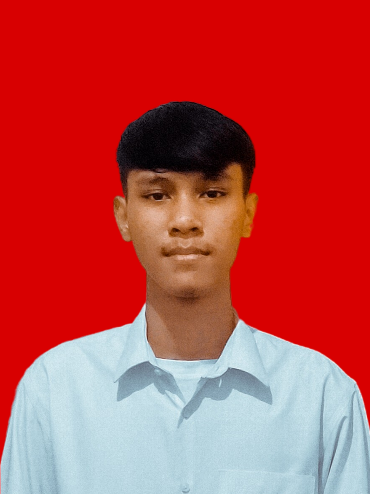

About
Saya mahasiswa Univesitas Singaperbangsa Karawang, Fakultas Ilmu Komputer dengan Program Studi Sistem Informasi. Saya masuk kuliah mengambil Program Studi Sistem Informasi karena saya minat atau tertarik dengan dunia coding seperti Frond-End, Back-End, dan Fullstack Web Developer, yang sekarang saya tempuh di perkuliahan. Sekarang saya sedang menempuh perkuliahan semester 5 dengan mengikuti program Pemerintah yaitu MSIB Studi Independen di Vocasia, mengambil bagian Frod-End Web Developer. Sekarang saya mengikuti organisasi Badan Eksekutif Mahasiswa Fakultas Ilmu Komputer.